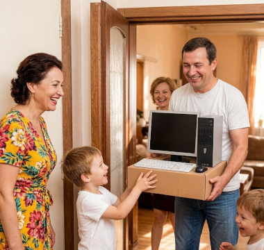

Покупка компьютера: как выбрать и не переплатить в 2026 году.
Рынок компьютеров предлагает десятки вариантов — от бюджетных офисных систем до мощных рабочих станций. Чтобы купить компьютер, который не разочарует через год, важно заранее определить задачи и понять, какие характеристики действительно влияют на производительность.
Для чего нужен компьютер: определяем задачи
Офисная работа и учёба
Браузер, текстовые редакторы, таблицы, видеозвонки. Для этих задач не нужна мощная видеокарта — достаточно современного процессора с интегрированной графикой и 16 ГБ оперативной памяти. Бюджет — от 25 000 рублей.
Работа с медиаконтентом
Видеомонтаж и обработка фотографий требуют значительно больше ресурсов. Здесь важны мощный процессор (6+ ядер), 32 ГБ оперативной памяти, быстрый NVMe SSD и дискретная видеокарта.
Игры
Главный компонент — видеокарта. Для игр в Full HD достаточно RTX 4060 или RX 7600. Для 4K и максимальных настроек потребуются топовые GPU.
Программирование и разработка
Многозадачность — ключевое требование. 16–32 ГБ оперативной памяти, быстрый процессор и SSD на 1 ТБ. Видеокарта важна только при работе с машинным обучением.

Основные характеристики компьютера
Процессор (CPU)
Центральный процессор определяет общую скорость работы системы. Актуальны Intel Core 13–14 поколения и AMD Ryzen 7000-й серии. Для повседневных задач достаточно 4–6 ядер, для профессиональной работы — 8 и более.
Оперативная память (RAM)
Минимум для комфортной работы — 16 ГБ. 8 ГБ заметно тормозят при открытых нескольких вкладках браузера и нескольких программах одновременно. 32 ГБ рекомендуются для медиаконтента и разработки.
Хранилище
SSD — обязательный компонент современного ПК. Он в 5–10 раз быстрее жёсткого диска и напрямую влияет на скорость запуска системы и программ. Оптимальный объём — 512 ГБ для системы, плюс дополнительный HDD для архива.
Видеокарта (GPU)
Для офисных задач достаточно интегрированной графики Intel Iris Xe или AMD Radeon. Для игр, видеомонтажа и 3D-рендера нужна дискретная карта с минимум 8 ГБ видеопамяти.
Настольный компьютер или ноутбук
Настольный ПК при одинаковой цене мощнее ноутбука. Его проще обслуживать, апгрейдить и охлаждать. Подключение нескольких мониторов и периферии — без ограничений.
Ноутбук выигрывает в мобильности. Если работа требует перемещения или место для стола ограничено — ноутбук предпочтительнее.
Новый или б/у компьютер
Новый компьютер
Гарантия производителя, актуальные компоненты, отсутствие износа. Минус — более высокая цена. Оптимален при долгосрочном планировании использования.
Б/у компьютер
Экономия 30–50%, возможность купить более мощную систему за те же деньги. Минус — нет гарантии производителя, нужна проверка компонентов. Подходит при ограниченном бюджете.
Где купить компьютер
Сетевые магазины предлагают широкий ассортимент, но редко — экспертную помощь с конфигурацией. Специализированные магазины помогут подобрать систему точно под задачи и предложат сборку на заказ.
Готовые настольные компьютеры для разных задач и бюджетов — подробнее: https://gadget-star.ru/catalog/nastolnye-kompyutery/